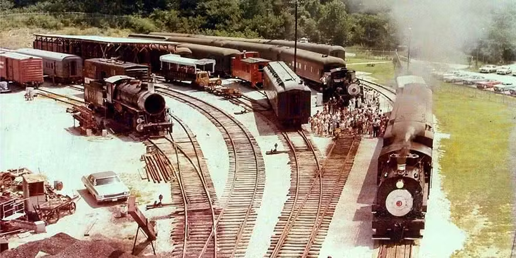
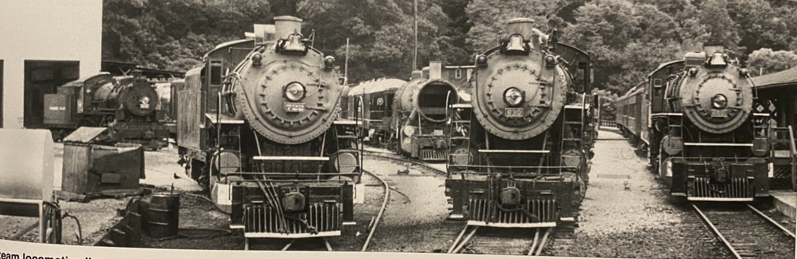

In 1961 the Tennesee Valley Railroad Museum was started as away to save old steam locomtoives and passenger cars from disappearing into the pages of history. Their first locomotive was brought that year and was a little 0-4-0ST Saddle Tank called "3 Spot", after 3 Spot arrived came a locomotive on lease from the Altanta Chapter of National Railway Historical Society former Gainesville Midland 203. Plans where made to purchased 203 for TVRM but the Altnata Chapter never did their side of the paperwork. After 203 came 2 Shay locomotives from the north of Tennessee being Brimstone Railroad 35 & 36. In 1964 museum founder Paul H. Merriman purchased Southern Railway 4501 from the Kentucky & Tennessee Railway where it had been number 12. She made the trip there under her own power. The museum had raised the money to purchased the 4501 however Paul had used his own personal money to buy the 4501 from the K&T which aloud the museum to go back to the K&T and purchased another locomotive, their No.10. It arrived in Chattanooga in the early spring of 1965.
After the arrival of No.10 in 1965 many more lcoomotives showed up, encluding; CB&T 2-4-2 No.1, L&A 4-6-0 No.509, COG 4-4-0 No.349, another tank engine called Zero, and a british built 0-6-0T called Flying Duchess, but the next inportant ones arrived in 1978 together former US Army Tranport Corp. 610 and Southern Railway 630. Southern 630 took to being the museum main locomotive for a number of years. Up until 1989 when she needed to have a federally mandated inspection done, but before that 630's sister locomotive the Southern 722 came to join the museum for a bit. So from 1980 to 1985 both Southern 630 and 722 worked the museum trains. In 1985, 722 was pulled from service due to mechanical troubles, she stayed at the museum until 1992 when she was moved to Asheville, NC. for display. In 1990 USATC 610 was returned to steam and started running the museum trains. Then in 1999 Southern Railway 630 fianlly was donated to TVRM by Norfolk Southern.
© 2024 Engines of TVRM